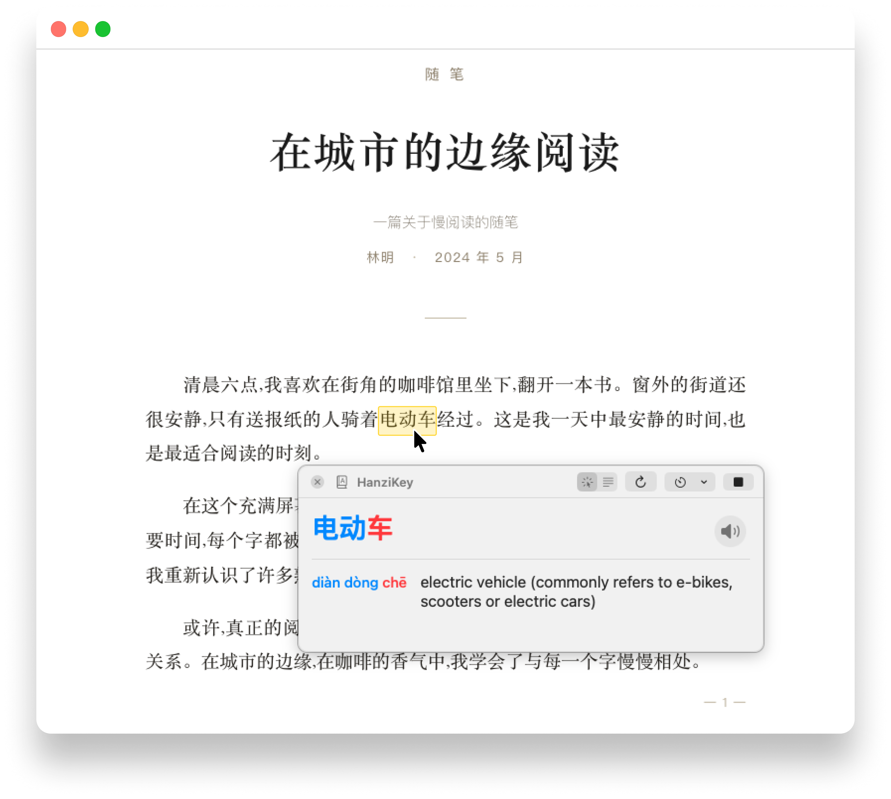
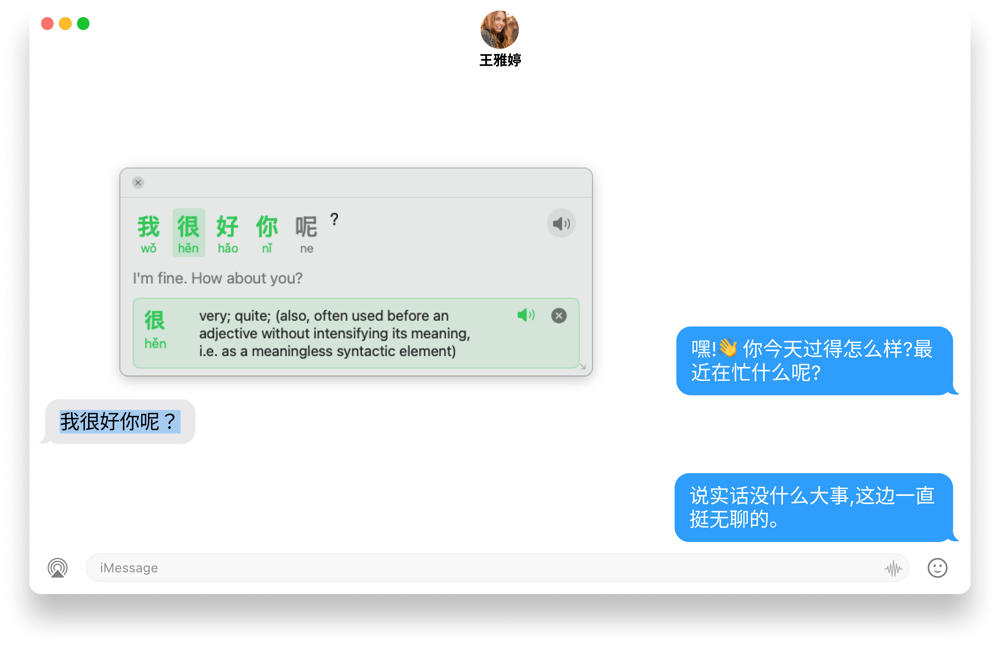
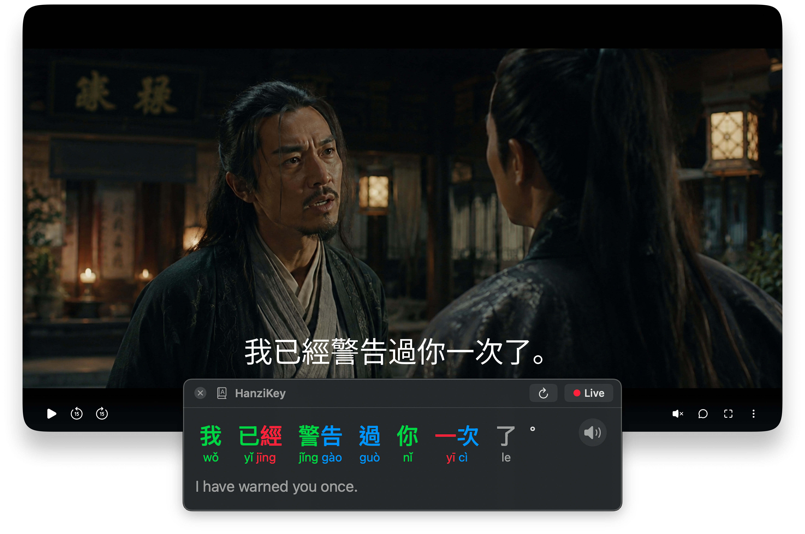
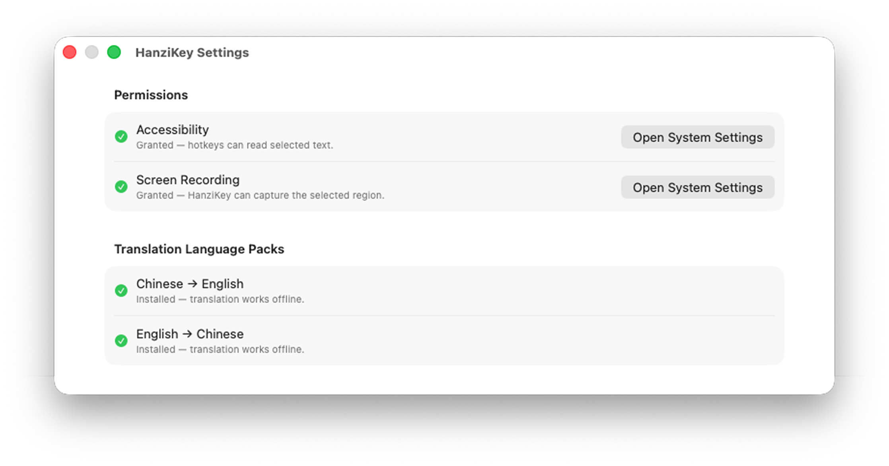

Hover any Chinese word for an instant definition. Drag-select a region for a full translation. Everything runs locally — no accounts, no servers, no analytics.


Select a Chinese sentence in any app — HanziKey lays out each character with its tone color, the pinyin underneath, and the full English translation. Click any character to expand its CC-CEDICT entry right in the popup.
⌘⇧Y Look up any selected Chinese in any app.

Pin HanziKey over any video player. The breakdown panel re-OCRs the subtitle area every half-second, so the per-word pinyin + English translation refresh as the scene moves.
⌘⇧I Pin to the video window with auto-rescan on.

OCR runs through Apple's Vision framework. Translations go through Apple's on-device Translate model with the language pack downloaded once. The CC-CEDICT dictionary ships with the app.
Direct download is signed and notarized by Apple.